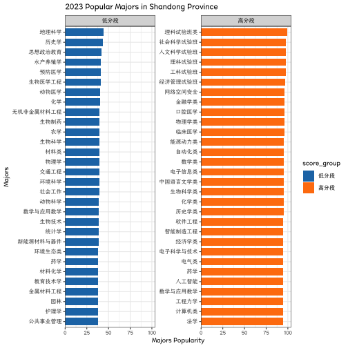
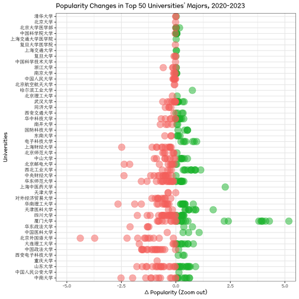
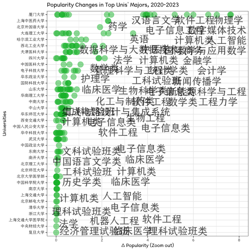

Changes in Popular Majors from 2020 to 2023
knitr::opts_chunk$set(echo = TRUE)
knitr::opts_knit$set(root.dir = "/Users/sousekilyu/Documents/GitHub/GaoKaoVer2")Data preparation
source("~/Documents/GitHub/GaoKaoVer2/main/etl.R")## data.table 1.14.8 using 1 threads (see ?getDTthreads). Latest news: r-datatable.com## **********
## This installation of data.table has not detected OpenMP support. It should still work but in single-threaded mode.
## This is a Mac. Please read https://mac.r-project.org/openmp/. Please engage with Apple and ask them for support. Check r-datatable.com for updates, and our Mac instructions here: https://github.com/Rdatatable/data.table/wiki/Installation. After several years of many reports of installation problems on Mac, it's time to gingerly point out that there have been no similar problems on Windows or Linux.
## **********##
## Attaching package: 'dplyr'## The following objects are masked from 'package:data.table':
##
## between, first, last## The following objects are masked from 'package:stats':
##
## filter, lag## The following objects are masked from 'package:base':
##
## intersect, setdiff, setequal, union## Loading required package: RColorBrewer## Loading required package: sysfonts## Loading required package: showtextdb##
## Attaching package: 'ggstance'## The following objects are masked from 'package:ggplot2':
##
## geom_errorbarh, GeomErrorbarh## ggbreak v0.1.2
##
## If you use ggbreak in published research, please cite the following paper:
##
## S Xu, M Chen, T Feng, L Zhan, L Zhou, G Yu. Use ggbreak to effectively utilize
## plotting space to deal with large datasets and outliers. Frontiers in Genetics.
## 2021, 12:774846. doi: 10.3389/fgene.2021.774846##
## Attaching package: 'plotly'## The following object is masked from 'package:ggplot2':
##
## last_plot## The following object is masked from 'package:stats':
##
## filter## The following object is masked from 'package:graphics':
##
## layout## ── Attaching core tidyverse packages ────────────────────────────────── tidyverse 2.0.0 ──
## ✔ forcats 1.0.0 ✔ readr 2.1.4
## ✔ lubridate 1.9.2 ✔ tibble 3.2.1
## ✔ purrr 1.0.2 ✔ tidyr 1.3.0
## ── Conflicts ──────────────────────────────────────────────────── tidyverse_conflicts() ──
## ✖ dplyr::between() masks data.table::between()
## ✖ tidyr::extract() masks magrittr::extract()
## ✖ plotly::filter() masks dplyr::filter(), stats::filter()
## ✖ dplyr::first() masks data.table::first()
## ✖ ggstance::geom_errorbarh() masks ggplot2::geom_errorbarh()
## ✖ lubridate::hour() masks data.table::hour()
## ✖ lubridate::isoweek() masks data.table::isoweek()
## ✖ dplyr::lag() masks stats::lag()
## ✖ dplyr::last() masks data.table::last()
## ✖ lubridate::mday() masks data.table::mday()
## ✖ lubridate::minute() masks data.table::minute()
## ✖ lubridate::month() masks data.table::month()
## ✖ lubridate::quarter() masks data.table::quarter()
## ✖ lubridate::second() masks data.table::second()
## ✖ purrr::set_names() masks magrittr::set_names()
## ✖ purrr::transpose() masks data.table::transpose()
## ✖ lubridate::wday() masks data.table::wday()
## ✖ lubridate::week() masks data.table::week()
## ✖ lubridate::yday() masks data.table::yday()
## ✖ lubridate::year() masks data.table::year()
## ℹ Use the conflicted package (<http://conflicted.r-lib.org/>) to force all conflicts to become errors
## Joining with `by = join_by(school)`source("/Users/sousekilyu/Documents/GitHub/GaoKaoVer2/main/function.r")## Warning: A numeric `legend.position` argument in `theme()` was deprecated in ggplot2 3.5.0.
## ℹ Please use the `legend.position.inside` argument of `theme()` instead.
## This warning is displayed once every 8 hours.
## Call `lifecycle::last_lifecycle_warnings()` to see where this warning was generated.热门专业变化趋势分析
哪些专业变多？哪些专业消失？
.tmp <- dt_rank_cmb_rough %>%
group_by(year, major) %>%
summarise(n = n_distinct(`院校`), .groups = "drop_last") %>%
mutate(n_over_total = n/sum(n)) %>%
arrange(desc(n_over_total))热门专业与考生成绩分布关系
高分段考生 vs 低分段考生
score_by_major_group_time <- dt_rank_cmb_rough %>%
group_by(year) %>%
arrange(score_by_major_scale) %>%
mutate(
score_group = cut(
score_by_major_scale,
breaks = c(-Inf, 50, 70, 90, Inf),
labels = c("低分段", "中低分段", "中高分段", "高分段")
)
) %>%
arrange(score_by_school_scale) %>%
mutate(
score_group_school = cut(
score_by_school_scale,
breaks = c(-Inf, 50, 70, 90, Inf),
labels = c("低分段", "中低分段", "中高分段", "高分段")
)
)
head(score_by_major_group_time)## # A tibble: 6 × 14
## # Groups: year [2]
## 院校 major frequency rank_by_major rank_by_school year school city province
## <chr> <chr> <dbl> <dbl> <dbl> <dbl> <chr> <chr> <chr>
## 1 C928泉州职业技… 油气… 10 260585 256142 2020 泉州… 泉州… 福建省
## 2 C928泉州职业技… 汽车… 5 259516 256142 2020 泉州… 泉州… 福建省
## 3 C928泉州职业技… 计算… 5 257697 256142 2020 泉州… 泉州… 福建省
## 4 C928泉州职业技… 机械… 5 256142 256142 2020 泉州… 泉州… 福建省
## 5 D857山东华宇工… 房地… 90 250390 243940 2021 山东… 德州… 山东省
## 6 D857山东华宇工… 道路… 45 249705 243940 2021 山东… 德州… 山东省
## # ℹ 5 more variables: score_by_major_scale <dbl>, score_by_school_scale <dbl>,
## # major_rough <chr>, score_group <fct>, score_group_school <fct>generate_plot <- function(time) {
plot <- score_by_major_group_time %>%
filter(
score_group %in% c("低分段", "高分段"),
year == time
) %>%
group_by(score_group, major) %>%
summarise(avg_scores = mean(score_by_major_scale, na.rm = TRUE), .groups = "keep") %>%
group_by(score_group) %>%
ggcharts::bar_chart(major, avg_scores, fill = score_group, facet = score_group, top_n = 30) +
theme_bw() +
theme(text = element_text(family = "Canger", size = 10)) +
labs(title = paste0(time, " Popular Majors in Shandong Province"), x = "Majors", y = "Majors Popularity")
}
# Generate plots
# 2020
p1 <- generate_plot(2020)
print(p1)
ggsaveTheme(p1,
mytheme = my_theme,
filename = "plot/Figure 1.major_by_score_2020.png",
width = 12,
height = 16,
dpi = 300
)
# 2023
p2 <- generate_plot(2023)
print(p2)
ggsaveTheme(p2,
mytheme = my_theme,
filename = "plot/Figure 2.major_by_score_2023.png",
width = 12,
height = 16,
dpi = 300
)从低分段 跃迁至高分段的 学校和专业
## 所有高校
# (中)高分段=>(中)低分段
high2low <- score_by_major_group_time %>%
filter((year == 2020 & score_group %in% c("高分段", "中高分段")) |
(year == 2023 & score_group %in% c("低分段", "中低分段"))) %>%
dplyr::select(院校, major, major_rough, year, score_by_major_scale) %>%
group_by(院校, major, major_rough) %>%
arrange(year) %>%
summarise(
countn = n(),
score_by_major_early = first(score_by_major_scale),
score_by_major_later = last(score_by_major_scale),
score_by_major_change = score_by_major_later - score_by_major_early,
.groups = "drop"
) %>%
filter(countn == 2) %>%
arrange(score_by_major_change) %>%
mutate(school_major = paste0(substr(院校, 5, nchar(院校)), "+", major)) %>%
filter(!is.na(school_major))
# 高分段=>(中)低分段
low2high <- score_by_major_group_time %>%
filter((year == 2020 & score_group %in% c("低分段", "中低分段")) |
(year == 2023 & score_group %in% c("高分段", "中高分段"))) %>%
dplyr::select(院校, major, major_rough, year, score_by_major_scale) %>%
group_by(院校, major, major_rough) %>%
arrange(year) %>%
summarise(
countn = n(),
score_by_major_early = first(score_by_major_scale),
score_by_major_later = last(score_by_major_scale),
score_by_major_change = score_by_major_later - score_by_major_early,
.groups = "drop"
) %>%
filter(countn == 2) %>%
arrange(desc(score_by_major_change)) %>%
mutate(school_major = paste0(substr(院校, 5, nchar(院校)), "+", major)) %>%
filter(!is.na(school_major))
# plot: https://www.r-bloggers.com/2017/06/bar-plots-and-modern-alternatives/
phl01 <- high2low[1:30, ] %>%
ggdotchart(
x = "school_major", y = "score_by_major_change",
color = "#F8756D",
sorting = "descending",
add = "segments",
dot.size = 6,
ggtheme = theme_pubr()
) +
rotate() +
# theme_bw() +
theme(text = element_text(family = "Canger", size = 10)) +
labs(title = "Majors from High to Low Scores Level", x = "Universities / Majors", y = "Δ Popularity")
print(phl01)
ggsaveTheme(phl01,
mytheme = my_theme,
filename = "plot/Figure 3.high2low.png",
width = 12,
height = 16,
dpi = 300
)
phl02 <- low2high[1:30, ] %>%
ggdotchart(
x = "school_major", y = "score_by_major_change",
color = "#00BA38",
sorting = "ascending",
add = "segments",
dot.size = 6,
ggtheme = theme_pubr()
) +
rotate() +
# theme_bw() +
theme(text = element_text(family = "Canger", size = 10)) +
labs(title = "Majors from Low to High Scores Level", x = "School / Major", y = "Δ Popularity")
print(phl02)
ggsaveTheme(phl02,
mytheme = my_theme,
filename = "plot/Figure 4.low2high.png",
width = 12,
height = 16,
dpi = 300
)
# ## 985&211
# # (中)高分段=>(中)低分段
# high2low <- score_by_major_group_time %>%
# filter(school %in% project211) %>%
# filter((year == 2020 & score_group %in% c("高分段", "中高分段")) |
# (year == 2023 & score_group %in% c("低分段", "中低分段"))) %>%
# dplyr::select(院校, major, major_rough, year, score_by_major_scale) %>%
# group_by(院校, major, major_rough) %>%
# arrange(year) %>%
# summarise(
# countn = n(),
# score_by_major_early = first(score_by_major_scale),
# score_by_major_later = last(score_by_major_scale),
# score_by_major_change = score_by_major_later - score_by_major_early,
# .groups = "drop"
# ) %>%
# filter(countn == 2) %>%
# arrange(score_by_major_change) %>%
# mutate(school_major = paste0(substr(院校, 5, nchar(院校)), "+", major)) %>%
# filter(!is.na(school_major))
# # 高分段=>(中)低分段
# low2high <- score_by_major_group_time %>%
# filter(school %in% project211) %>%
# filter((year == 2020 & score_group %in% c("低分段", "中低分段")) |
# (year == 2023 & score_group %in% c("高分段", "中高分段"))) %>%
# dplyr::select(院校, major, major_rough, year, score_by_major_scale) %>%
# group_by(院校, major, major_rough) %>%
# arrange(year) %>%
# summarise(
# countn = n(),
# score_by_major_early = first(score_by_major_scale),
# score_by_major_later = last(score_by_major_scale),
# score_by_major_change = score_by_major_later - score_by_major_early,
# .groups = "drop"
# ) %>%
# filter(countn == 2) %>%
# arrange(desc(score_by_major_change)) %>%
# mutate(school_major = paste0(substr(院校, 5, nchar(院校)), "+", major)) %>%
# filter(!is.na(school_major))
# # plot: https://www.r-bloggers.com/2017/06/bar-plots-and-modern-alternatives/
# phl01 <- high2low[1:30, ] %>%
# ggdotchart(
# x = "school_major", y = "score_by_major_change",
# color = "#F8756D",
# sorting = "descending",
# add = "segments",
# dot.size = 6,
# ggtheme = theme_pubr()
# ) +
# rotate() +
# # theme_bw() +
# theme(text = element_text(family = "Canger", size = 10)) +
# labs(title = "Majors from High to Low Scores Level", x = "Universities / Majors", y = "Δ Popularity")
# print(phl01)
# ggsaveTheme(phl01,
# mytheme = my_theme,
# filename = "plot/Figure 3-2.211_high2low.png",
# width = 12,
# height = 16,
# dpi = 300
# )
# phl02 <- low2high[1:30, ] %>%
# ggdotchart(
# x = "school_major", y = "score_by_major_change",
# color = "#00BA38",
# sorting = "ascending",
# add = "segments",
# dot.size = 6,
# ggtheme = theme_pubr()
# ) +
# rotate() +
# # theme_bw() +
# theme(text = element_text(family = "Canger", size = 10)) +
# labs(title = "Majors from Low to High Scores Level", x = "School / Major", y = "Δ Popularity")
# print(phl02)
# ggsaveTheme(phl02,
# mytheme = my_theme,
# filename = "plot/Figure 4-2.211_low2high.png",
# width = 12,
# height = 16,
# dpi = 300
# )2020-2023专业热度变化分布
# Plot the distribution of the change in scores by major
# Calculate the average scores by major
avg_scores <- score_by_major_rough_change %>%
filter(major_rough %in% majorData_rough$major) %>%
group_by(major_rough) %>%
summarise(avg_score = mean(score_by_major_change), .groups = "keep")
head(avg_scores)## # A tibble: 6 × 2
## # Groups: major_rough [6]
## major_rough avg_score
## <chr> <dbl>
## 1 临床医学 4.22
## 2 信息管理与图书情报 4.48
## 3 公共管理类 -0.646
## 4 农业类 5.17
## 5 化学类 2.30
## 6 历史学类 4.88# Add the average scores to the graph
p <- score_by_major_rough_change %>%
filter(major_rough %in% majorData_rough$major) %>%
mutate(color = ifelse(score_by_major_change >= 0, "上涨", "下降")) %>%
ggplot(aes(x = score_by_major_change, fill = color)) +
geom_histogram(bins = 100) +
facet_wrap(~ reorder(major_rough, score_by_major_change, FUN = mean), dir = "h") +
coord_cartesian(xlim = c(-30, 30), ylim = c(0, 150)) +
scale_fill_manual(
values = c("上涨" = "#00BA38", "下降" = "#F8756D"),
labels = c("上涨" = "Increase", "下降" = "Decrease"),
name = "Δ Popularity"
) +
theme_bw() +
theme(
text = element_text(family = "Canger", size = 10),
legend.position = c(.8, .07),
) +
labs(title = "Histogram of Popularity Changes in Major Categories", x = "2020-2023 Δ Popularity", y = "Freq.")
# save png
print(p)
ggsaveTheme(p,
mytheme = my_theme_legend,
filename = "plot/Figure 5.score_by_major_rough_change.png",
width = 16,
height = 12,
dpi = 300
)热门高校变化
热门高校一线&新一线城市聚集度变化
# # 高分学校在大城市占比 vs 高分专业在大城市占比。学校分数线体现底线思维，专业分数线体现择优思维。结果：重点城市的高分学校聚集度上涨，高分专业聚集度没有上涨
# #' 说明：
# #' 1. 从学校报考维度，学生倾向于去重点城市的学校就读，区域因素很重要，用重点城市学校「托底」；
# #' 2. 从专业选择角度，学生更加实际，在能选择的范围内专业优先，而非地域优先。
# score_by_major_group_time %>%
# filter(score_group_school %in% c("中高分段", "高分段")) %>%
# dplyr::select(school, year, city, province, score_group_school) %>%
# unique() %>%
# group_by(year) %>%
# summarise(
# fraction = round(sum(ifelse(city %in% core_city, 1, 0)) / n(), 3)
# )
# #
# score_by_major_group_time %>%
# filter(score_group %in% c("中高分段", "高分段")) %>%
# dplyr::select(school, major, year, city, province, score_group) %>%
# unique() %>%
# group_by(year) %>%
# summarise(
# fraction = round(sum(ifelse(city %in% core_city, 1, 0)) / n(), 3)
# )
# ## 论据：主要大城市的「热门」专业占比并没有显著增加
# score_by_major_group_time %>%
# filter(city %in% core_city) %>%
# dplyr::select(school, major, major_rough, year, city, province, score_group) %>%
# group_by(year) %>%
# summarise(
# fraction = round(sum(ifelse(major_rough %in% c("软件工程", "电气类", "汉语言", "计算机类", "通信类"), 1, 0)) / n(), 3)
# )重点高校专业热度变化 / 高分段学校的低分段专业，同理
# !考虑到学校最低分收到专业极大影响，院校位次分数根据中位数排名，而非最低位次
dt_school_top <- dt_rank_cmb %>%
mutate(school = substr(院校, 5, nchar(院校))) %>%
filter(year == 2023) %>%
mutate(rank = dense_rank(desc(score_by_school_scale))) %>%
# filter(rank <= 30) %>%
ungroup()
dt_school_top_change <- score_by_major_rough_change %>%
filter(院校 %in% dt_school_top$院校) %>%
left_join(unique(select(dt_school_top, 院校, score_by_school_scale, school, rank)),
by = "院校"
)
head(dt_school_top_change)## # A tibble: 6 × 12
## 院校 major province city countn score_by_major_early score_by_major_later
## <chr> <chr> <chr> <chr> <int> <dbl> <dbl>
## 1 D904北京工业大学… 计算… 北京市 北京市 2 12.5 75.4
## 2 D601长春工业大学… 软件… 吉林省 长春市 2 13.2 72.6
## 3 D905南京工业大学… 计算… 江苏省 南京市 2 25.1 78.8
## 4 D991江苏科技大学… 能源… 江苏省 苏州市 2 22.4 71.0
## 5 D897天津理工大学… 数据… 天津市 天津市 2 19.5 67.3
## 6 D897天津理工大学… 软件… 天津市 天津市 2 20.8 66.7
## # ℹ 5 more variables: score_by_major_change <dbl>, major_rough <chr>,
## # score_by_school_scale <dbl>, school <chr>, rank <int>p_school_change <- dt_school_top_change %>%
filter(rank <= 50) %>%
ggplot(aes(
x = score_by_major_change,
y = reorder(school, score_by_school_scale),
color = ifelse(score_by_major_change > 0, "#00BA38", "#F8756D")
)) +
geom_point(size = 5, alpha = .5) +
scale_color_identity() +
# scale_x_log10() +
theme_bw() +
theme(text = element_text(family = "Canger", size = 10)) +
labs(title = "Popularity Changes in Top 50 Universities' Majors, 2020-2023", x = "Δ Popularity", y = "Universities")
# save png
print(p_school_change)
ggsaveTheme(p_school_change,
mytheme = my_theme,
filename = "plot/Figure 6.top_uni_change_by_major.png",
width = 12,
height = 16,
dpi = 300
)
dt_school_top <- dt_rank_cmb %>%
mutate(school = substr(院校, 5, nchar(院校))) %>%
filter(year == 2023) %>%
mutate(rank = dense_rank(desc(score_by_school_scale))) %>%
# filter(rank <= 30) %>%
ungroup()
dt_school_top_change <- score_by_major_rough_change %>%
filter(院校 %in% dt_school_top$院校) %>%
left_join(unique(select(dt_school_top, 院校, score_by_school_scale, school, rank)),
by = "院校"
)
head(dt_school_top_change)## # A tibble: 6 × 12
## 院校 major province city countn score_by_major_early score_by_major_later
## <chr> <chr> <chr> <chr> <int> <dbl> <dbl>
## 1 D904北京工业大学… 计算… 北京市 北京市 2 12.5 75.4
## 2 D601长春工业大学… 软件… 吉林省 长春市 2 13.2 72.6
## 3 D905南京工业大学… 计算… 江苏省 南京市 2 25.1 78.8
## 4 D991江苏科技大学… 能源… 江苏省 苏州市 2 22.4 71.0
## 5 D897天津理工大学… 数据… 天津市 天津市 2 19.5 67.3
## 6 D897天津理工大学… 软件… 天津市 天津市 2 20.8 66.7
## # ℹ 5 more variables: score_by_major_change <dbl>, major_rough <chr>,
## # score_by_school_scale <dbl>, school <chr>, rank <int># zoom out
p_school_change_zoom <- dt_school_top_change %>%
filter(rank <= 50) %>%
ggplot(aes(
x = score_by_major_change,
y = reorder(school, score_by_school_scale),
color = ifelse(score_by_major_change > 0, "#00BA38", "#F8756D")
)) +
geom_point(size = 5, alpha = .5) +
scale_color_identity() +
coord_cartesian(xlim = c(-5, 5)) +
# scale_x_log10() +
theme_bw() +
theme(text = element_text(family = "Canger", size = 10)) +
labs(title = "Popularity Changes in Top 50 Universities' Majors, 2020-2023", x = "Δ Popularity (Zoom out)", y = "Universities")
# save png
print(p_school_change_zoom)
ggsaveTheme(p_school_change_zoom,
mytheme = my_theme,
filename = "plot/Figure 7.top_uni_change_by_major_zoom.png",
width = 12,
height = 16,
dpi = 300
)名校「冷门」专业对高分考生的吸引力
# 名校冷门专业占比 变化不大
dt01 <- score_by_major_group_time %>%
filter(school %in% project211) %>%
dplyr::select(school, major, major_rough, year, city, province, score_group) %>%
group_by(year) %>%
summarise(
fraction01 = round(sum(ifelse(major_rough %in% c("外国语言文学", "环境科学类", "公共管理类", "哲学", "新闻传播学", "建筑学类", "土木工程类", "经济学类", "金融类", "地质学"), 1, 0)) / n(), 3)
)
# 对高分考生的吸引力已经减弱
dt02 <- score_by_major_group_time %>%
filter(
major_rough %in% c("外国语言文学", "环境科学类", "公共管理类", "哲学", "新闻传播学", "建筑学类", "土木工程类", "经济学类", "金融类", "地质学"),
school %in% project211
) %>%
dplyr::select(school, major, major_rough, year, city, province, score_group) %>%
group_by(year) %>%
summarise(
fraction02 = round(sum(ifelse(score_group %in% c("高分段"), 1, 0)) / n(), 3)
)
dt_merge <- left_join(dt01, dt02) %>%
mutate(fraction02_plot = fraction01 * fraction02)## Joining with `by = join_by(year)`real_value <- c(dt_merge$fraction01, dt_merge$fraction02)
# plot dt_merge as barplot
dp1 <- dt_merge %>%
gather(key = "variable", value = "value", -year) %>%
filter(variable %in% c("fraction01", "fraction02_plot")) %>%
data.frame(value2 = as.character(formattable::percent(real_value))) %>%
mutate(
value = formattable::percent(value),
value2 = ifelse(variable == "fraction02_plot", paste0(value2, " in majs."), value2)
) %>%
ggplot(aes(x = year, y = value, fill = variable)) +
geom_bar(stat = "identity", position = position_dodge()) +
geom_text(aes(label = value2), position = position_dodge(width = 0.9), vjust = -0.25) +
scale_fill_manual("", values = c("#016FBC", "#E8BA00"), labels = c("fraction01" = "% of Unpop. Majs.", "fraction02_plot" = "% of High-Scoring Majs. in Unpop. Majs.")) +
theme_bw() +
theme(
text = element_text(family = "Canger", size = 10),
legend.position = "bottom"
) +
labs(title = "% of Unpopular Majors in 985 & 211 Univs.", x = "Year", y = "Percentage %", fill = "Variable")
print(dp1)
dp1 <- dp1 +
geom_text(aes(label = value2), position = position_dodge(width = 0.9), vjust = -0.25, size = 25)
ggsaveTheme(dp1,
mytheme = my_theme_legend_define,
filename = "plot/Figure 8.percentage of unpopular majors in univs.png",
width = 16,
height = 12,
dpi = 300
)